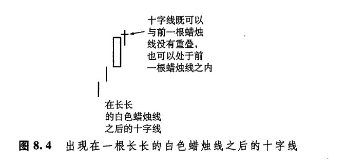
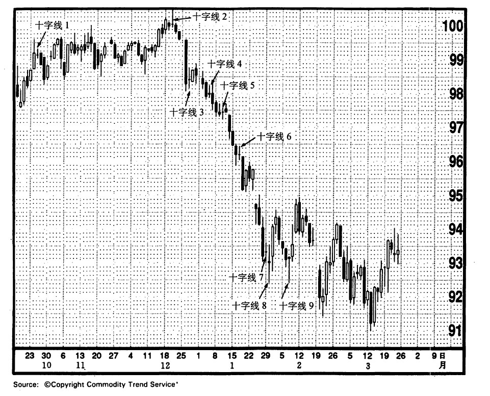
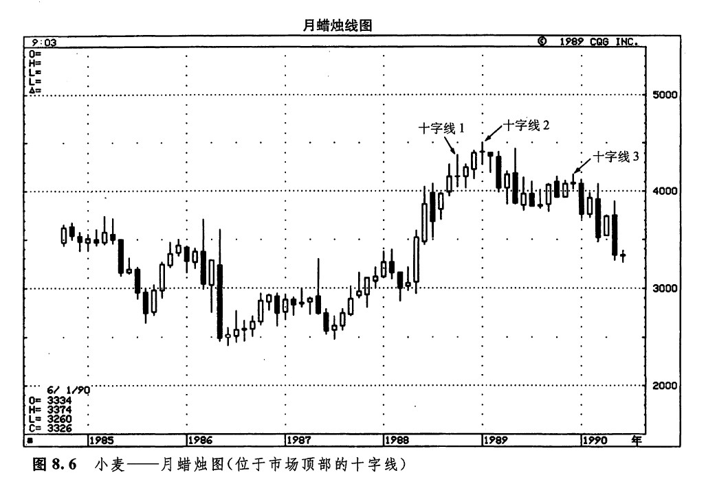
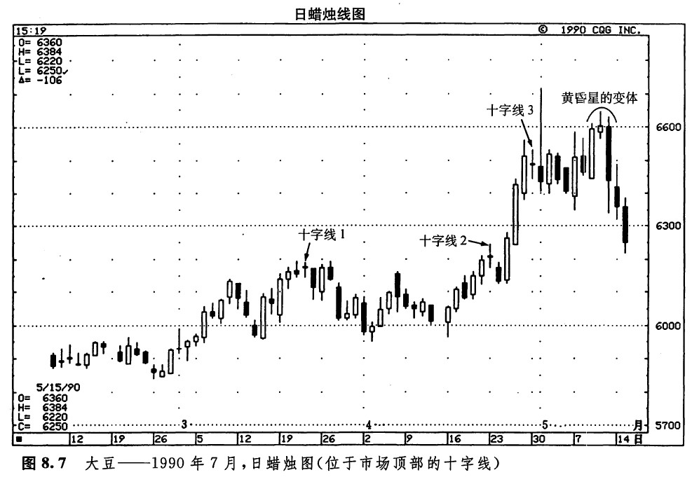

十字线之所以极有价值，是因为它在揭示市场顶部方面有过人之长。在上升趋势中，如果前面出现一根长长的白色蜡烛线，后面跟着一根十字线，这种情况尤其值得注意。为什么十字线出现在上升趋势中具有负面意义呢？这是因为十字线代表着市场处于犹豫不决的心理状态。在上升趋势中，如果买方犹豫不决，看不准市场方向，或者不能当机立断，那么当前的上升趋势是维持不下去的。只有在买方立场坚定的条件下，上涨行情才能够得到有力的支撑。在市场经历了长期的上涨之后，或者当市场处于超买状态时，如果出现了一根十字线（在这根蜡烛线上大书着“犹疑不定”四字），则意味着买方搭起来的脚手架马上就要垮掉了。
另一方面，虽然十宇线在引发市场的顶部反转方面是相当有效的，但是根据我们的经验来看，在下降趋势中，十字线往往丧失了发挥反转作用的潜力。其中的原因可能是这样的：十字线反映了买方与卖方在力量对比上处于相对平衡状态。由于市场参与者抱着骑墙的态度，市场往往因为自身的重力而下坠。因此，当十字线出现时，在上升趋势中，市场可能向下反转，而在下降趋势中，市场则可能继续下跌。因为上述原因，十宇线在构成底部反转信号时，比作为顶部反转信号需要更多的佐证。如图8.5所示的实例很好地检验了这一原则。
从图8.5中我们可以看到，当十字线1发生后，长期国债的上升趋势就转变为一个横向延伸区间。市场的最高点正是十字线2出现之处。十字线2是一条长腿十字线。所谓长腿十字线，指某根十字线具有一条或两条很长的影线。长腿十字线经常构成市场顶部信号。本章后面还要对这类十字线进行更详细的讨论。十字线l 和十字线2处在上升趋势之后，我们不难看出，在图示的市场顶部反转过程中，它们起到了何等重要的作用（10月31日也是一根十字线，但是它位于水平交易区间的中部，因而没有太大的意义）。当市场由此向下突破以后，又形成了十字线3、4、5、6、7。不过，这些十字线都不是反转信号。在这些十字线出现后，市场依旧继续下跌。只有在十字线8和十字线9出现后，并且在两者形成了一个双重底形态的情况下，才发生了趋势反转现象（尽管这轮趋势反转的过程较为短暂），从上述分析可见，十字线作为顶部反转信号，与作为底部反转信号，两种情况比起来，前一种情况往往只需要较少的验证信号。


图8.5美国长期国债——1990年6月，日蜡烛图（位于市场顶部的十字线）
如图8.6所示，从1987年中开始，市场形成了一轮上涨行情。当十字线1出现时，发出了这轮上涨行情的第一个顶部反转信号。几个月以后，当十字线2出现时，又举起了第二面警告信号旗。十字线2之后的一根上吊线证实了顶部反转过程的到来。1989年底，市场曾发起过一段小规模的上冲试探行情，但是被十字线3打断了。本实例证明，如果在十字线之后还有其他验证信号，就提高了预测趋势反转的成功机会。在十字线1的下一个月，是一根白色蜡烛线，它没有验证十字线1发出的顶部信号。仅当十字线2出现后，才发出了看跌的验证信号：在十字线2之后，市场通过这样的形式给出了验证信号，首先是一根上吊线，然后，又出现了一根长长的黑色蜡烛线，在十字线3的下一个月，市场形成了一根长长的黑色蜡烛线，由此验证了十字线3的顶部信号。

我们所采取的交易风格越是保守，那么，耐心地等待趋势反转的验证信号就越为重要。到底需要等待多久呢？这就得从风险与报偿两个方面来权衡。如果我们选择较为保守的交易风格，宁愿等待趋势反转的验证信号，那么确实可能承担较少的风险；但是另一方面，我们从交易中取得的报偿也可能减少了。等到趋势反转信号得到确认的时候，获利的空间也许已经缩小了。
在如图8.7所示的实例中，共有三根十字线，每一根都出现在上升趋势之后。十字线1标志着一个小规模的市场顶部。十字线2所发出的反转信号是不正确的，但是在其后一天，价格也有0.08美元的下挫。十字线3很有意思。它比前面两根十字线都重要得多，因为它出现在一个由三根长长的白色蜡烛线形成的蜡烛线系列之后，并且与它前面的一根白色蜡烛线组成了一个孕线形态。十字线3有力地向我们昭示，之前的上升趋势可能已经终结。当这根十字线出现后，持有多头头寸者就应当采取保护性措施了（在当前的强劲上升趋势中，当然是不允许卖出做空的）。这就是说，他们应当平回一部分多头头寸，或者将保护性止损指令的水平适当提高，还可以卖出买权期权。

在这根十字线的次日，其日内价格变化曾经一度急剧地上涨。从当时的行情乍看起来，似乎这根十字线关于当前上升趋势即将完结的预言是错误的。但是，就在这一天，市场在收市之前发生了剧烈的抛售行情。以上的价格演化过程有助于证实我们本来的观点，即当前的上升趋势马上要终止了。在接下来的几周里，市场便转入了横向整理阶段。后来，市场形成了一个类似于黄昏星的形态。在该形态中，位于星线位置的蜡烛线并没有从前一根长长的白色实体上向上跳空，因此，这不是一个理想的黄昏星形态。不过，它还是标志着市场顶部的到来。
下一篇：出现在长长的白色蜡烛线之后的十字线
上一篇：十字线的重要性
copyright @ 2018 制作：汉钛电线，Hingtak Wire & Cable LLC